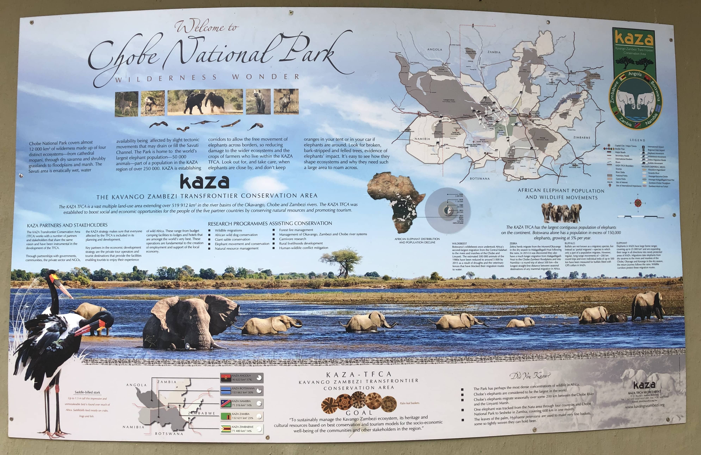

Introduction
Chobe National Park, located in the northern part of Botswana, is renowned for its stunning landscapes and incredible concentration of wildlife, particularly elephants. The park is named after the Chobe River, which forms its northern boundary and is a lifeline for the animals, especially during the dry season.
History and Significance
Established in 1967, Chobe was the first national park in Botswana. The area was initially set aside as a wildlife reserve in 1931 and gradually expanded to protect various wildlife corridors and habitats. Today, it stands as a cornerstone of Botswana's thriving ecotourism industry and conservation efforts.
What to See
Chobe is divided into distinct sections, each offering unique landscapes and wildlife viewing opportunities:
- The Riverfront: Most accessible and popular area, featuring incredible elephant herds
- Savuti Marsh: Known for predator sightings and annual zebra migration
- Linyanti Wetlands: Remote and wild with excellent bird watching
- Nogatsaa: Less visited woodland area with seasonal waterholes
Wildlife
Chobe is home to an estimated 50,000 elephants, the highest concentration in Africa. Visitors can also spot lions, leopards, buffalo, giraffe, zebra, and numerous antelope species. The river attracts hippos, crocodiles, and over 450 bird species.
Location
Activities
Popular activities in Chobe include:
- Game drives along the riverfront
- Boat cruises on the Chobe River
- Photography safaris
- Fishing excursions
- Guided walking safaris (in designated areas)
Best Time to Visit
The dry season (May to October) offers the best wildlife viewing as animals concentrate around water sources. The wet season (November to April) brings lush landscapes, newborn animals, and excellent bird watching opportunities.
Image Gallery